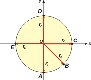
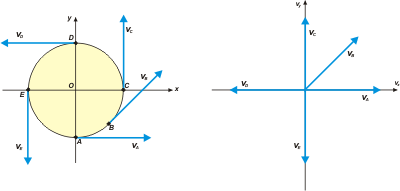

|
NO ME SALEN
PROBLEMAS RESUELTOS DE FÍSICA DEL CBC
(Vectorial kinematics)
|
|
 |
 |
1.3- A kid is on a carrousel, describing a circumference of (2m radius), completing a lap every 8 seconds. You can see the trajectory in the drwaing seen from above. Considering the kid only stays for one lap: |
 |
a - adopt a coordinate system centered in the reference point O. Draw and determine the position vectors of the kid in points: A, B, C, D and E.
b- Determine and portrat the displacement vectors between: A and E; A and D; A and C; A and B.
c- Determine and portray (in other scheme) the average speed vectors between: A and D; A and C; A and B.
d- (Vectorial kinematics)
e- Find the displacement vector and the average speed between: points A and D, A and C, in this new system, and compare the results with the ones from: b- and c- .
f-Represent the instant speed vectors in points A, B and C. Do they depend on the reference system we take? Wich is their intensity? |
Long as poor man´s hope... but we have no choice. Let´s begin. |
|  |
a -
rA = 0 m î — 2 m ĵ
rB = 1,41 m î — 1,41 m ĵ
rC = 2 m î + 0 m ĵ
rD = 0 m î + 2 m ĵ
rE = — 2 m î + 0 m ĵ
|
|
|
El valor 1,41 lo sacás haciendo pitágoras en el triangulito rectángulo que forma rB con los ejes. De ese trangulito sabés que la hipotenusa vale 2 y que los catetos son iguales. El arco AB es igual al arco BC (dato del enunciado dado en el esquemita). |
î and ĵ are vectors of modulus 1, also called "Versors", their objetive is to join the vectorial characteristics of a number and tell where it is pointing to. Usually it is portrayed with a little hat or a little comma above ( replacing the typical i and j ). Versor î has the same direcction and sense in the x axis, as the ĵ versor in the y axis.
b - The displacement vector, ΔrAE, for example, is the vectorial subtraction between the rear position vector and it´s previous one, rE — rA; To find it, you must subtract component by component. It´s easy, just look.
ΔrAE = rE — rA
ΔrAE = (— 2 m î + 0 m ĵ ) — (0 m î — 2 m ĵ ) = — 2 m î + 2 m ĵ
I just do the same with the other ones.
ΔrAD = 0 m î + 4 m ĵ
ΔrAC = 2 m î + 2 m ĵ
ΔrAB = 1,41 m î + 0,59 m ĵ
I portrayed it in green, just like the others. I will portray them twice. The one in the left is the geometric operation: to subtract two vectors, you just have to join them together by their ends. The subtract vector always have it´s origin in the first vector and ends on the second one.
In the one at the right, I portrayed them just how I got them by doing it analitically, then, they appear centered in the origin of the reference system. Just look at it, there you have them.
|
|
|
 |
|
|
c -The average speed is:
vm = Δr / Δt
To analytically obtain the average speed vector (vm) you divide each component of the Δr vector by the time interval, wich is different for each position, but it´s easy to calculate, because if it taked 8s to finish an entire lap, it takes 4s to finish half a lap, and so on. |
|
|
 |
I represent the three of them in a speed chart; you can see that the scale taken in this drawing has no relation with the ones taken in the previous drawings.
vmAD = 0 m/s î + 1 m/s ĵ
vmAC = 1 m/s î + 1 m/s ĵ
vmAB = 1,41 m/s î + 0,59 m/s ĵ
|
|
|
|
| d - The graphic´s scale is kinda distorted, but it is understandable anyways. Otherwise it wouldn´t have fitted in the screen. |
|
|
 |
rA = —10 m î — 2 m ĵ
rB = —8,59 m î — 1,41 m ĵ
rC = —8 m î + 0 m ĵ
rD = —10 m î + 2 m ĵ
rE = — 12 m î + 0 m ĵ |
|
|
|
e -If you do the math, you will notice that the results (and portrayals) are the same we had before.
f - The instant speed I obtain it dividying the displacement (measured over the trajectory) with it´s corresponding time interval. For example: to finish one lap, that is, 12.56 m (3,14 times the diameter), it takes 8 s. Then, the instant speed is: v = 1.57 m/s. I made two drawings: one in sity, that is, the carriage; The other one, in a speed chart. |
|
|
|  |
|
|
Once more, you can nottice that the scales I use for the lenghts have nothing to do with the scales I use in the speed charts, and that´s the way to be.
CHALLENGE: obtain all the vector´s modulus in this problem. Compare them between each other, and find the angles they form with the x axis. And then, yes, go have some vacations to the Canary islands. |
|
 |
| Some rights reserved. Reproduction allowe by quoting the source. Translated by Santi Pisci. Last Updated jul-15. Buenos Aires, Argentina. |
|
|
|